Почтовый трекер
Сервисы массовых рассылок позволяют видеть отчеты о доставке писем и их прочтении. Что делать, когда вам нужно отправить email одному человеку: ответить на вакансию, написать генеральному директору, коллеге или партнеру компании?
Для этого есть специальные расширения для браузера, сторонние сервисы и ссылки о подтверждении отправки. Давайте рассмотрим наиболее популярные варианты — как узнать, прочитано ли письмо.
Как узнать, прочитано ли письмо — Gmail
Gmail считается одним из популярных почтовых клиентов — его используют по всему миру. Чтобы узнать о прочтении письма, вы можете использовать сторонние сервисы или добавлять в email ссылку для отслеживания просмотра сообщения — о них мы расскажем в разделе универсальных советов.
Давайте разберемся, как узнать прочитано ли сообщение в Gmail. Для этого мы подготовили для вас два удобных и простых в использовании трекера.
MailTrack
MailTrack — сервис, разработанный специально для Gmail. Это бесплатное расширение, где есть возможность подключить дополнительные функции в премиум-версии: аналитика доставляемости писем, количество открытых и прочитанных сообщений, отслеживание кликов и так далее. Платная версия поддерживает три тарифа: за месяц, квартал и год.
Минус бесплатной версии в том, что в письме будет указана ссылка на сайт, а это может раздражать получателей.
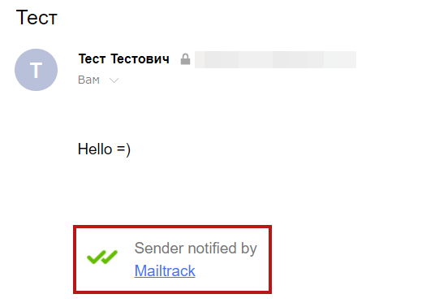Как включить уведомление о прочтении в Gmail:
Вам нужно установить расширение . Затем зарегистрировать свой аккаунт.
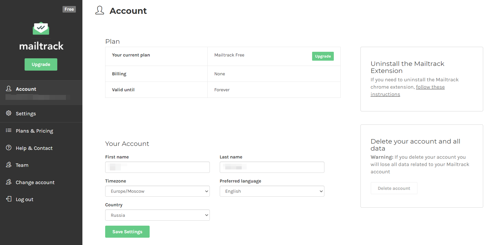Открыть почтовый ящик, выбрать создание нового письма и подтвердить настройку внизу окна — нажмите на две галочки и проверьте, включено ли расширения.
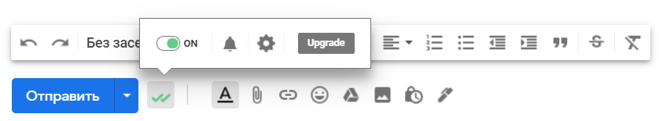После создания email в папке «Отправленные» вы можете увидеть два варианта значения галочек:
- Послание еще не прочитано, но доставлено абоненту. 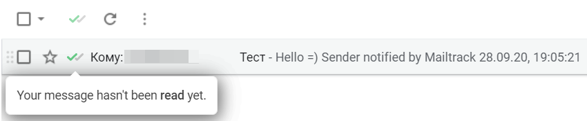
- Письмо прочитано и открыто. 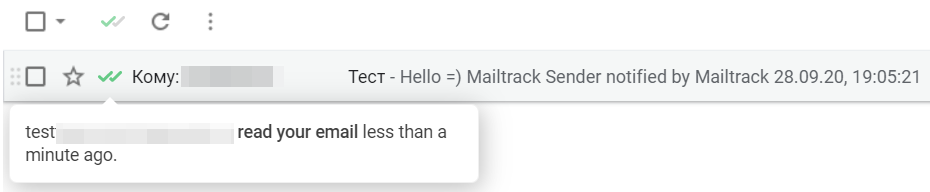
Через 24 часа на вашу почту придет сводный анализ от сервиса о количестве прочитанных писем. Если в email будет ссылка, то MailTrack также покажет количество нажатий на нее.
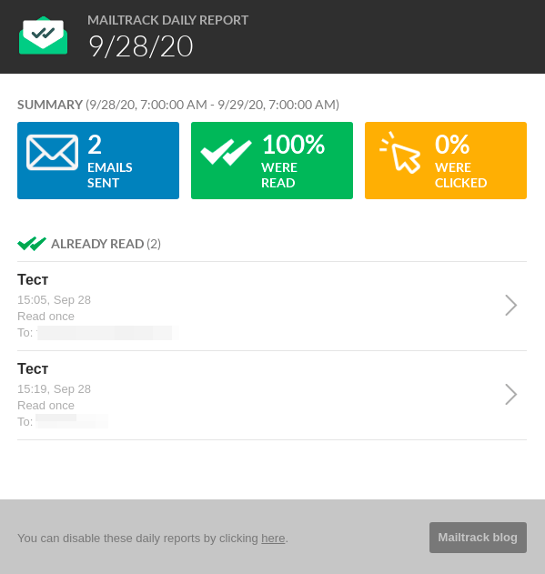Unlimited Email Tracker
Unlimited Email Tracker — это трекер от Snov.io для Gmail. Установка такая же, как в MailTrack, отличия только в значках.
На скриншоте ниже показаны три символа:
- Запланировать время отправки.
- Установить напоминание для последующих действий.
- Включить или отключить отслеживание сообщения — это как раз кнопка работы трекера. 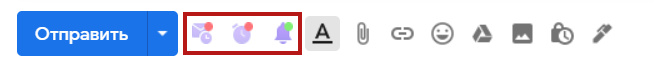
В напоминаниях можно задать условия и время. Варианты условий:
- Если не открывалось — напоминание о том, что послание не прочитано.
- Если нет кликов — получатель не перешел по ссылке.
- Если нет ответа от пользователя.
- В любом случае — напоминание о том, что ваш email был отправлен. 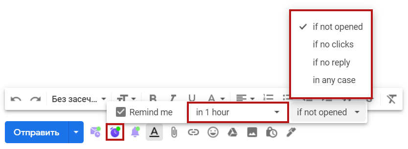
К письму с напоминанием добавляется значок часов:
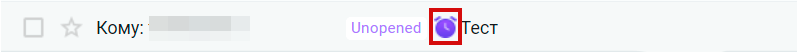После того, как абонент откроет сообщение или перейдет по ссылке, соответствующие надписи покажутся рядом с отправленным email: количество кликов и просмотров.
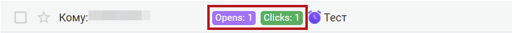Статистику отправленных писем можно посмотреть на сайте Snov.io в вашем личном кабинете:
Зайдите в «Другие инструменты» и выберите «Трекер Gmail».
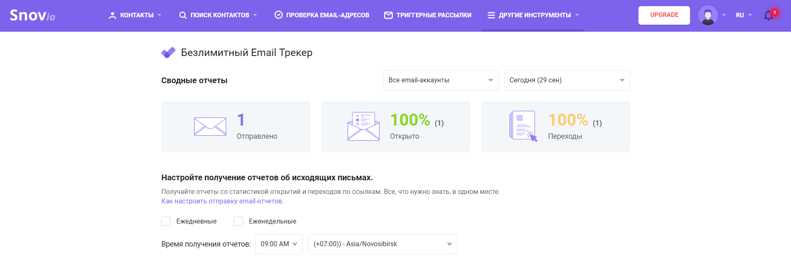